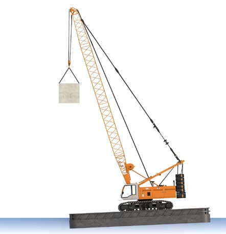

|
Schwimm-, Kenter- und Standsicherheit
Setzen Sie als Unternehmerin oder Unternehmer nur Schwimmende Geräte ein, bei denen Schwimmfähigkeit und Kentersicherheit rechnerisch nachgewiesen und von einem Sachverständigen geprüft wurde. Dieser Sachverständige muss von der Zentralstelle Schiffsuntersuchungskommission/Schiffseichamt (ZSUK) anerkannt sein. Hierbei sind
- die tatsächlich eingesetzten Maschinen/Geräte,
- die Belastungen durch die auszuführenden Arbeiten, z. B. beim Hebezeugbetrieb, und
- die Positionen der Maschinen/Geräte auf dem Schwimmenden Gerät zu berücksichtigen.
Die Zusammenfassung der Ergebnisse der geprüften Stabilitätsberechnung ist an der Verwendungsstelle vorzuhalten. Die sich aus der Stabilitätsberechnung ergebende Krängung und ihre Auswirkung auf die Standsicherheit der eingesetzten mobilen Arbeitsmittel (z. B. Seilbagger) sind bei Auswahl und Betrieb der mobilen Arbeitsmittel zu berücksichtigen.
Die festgelegten Maßnahmen (z. B. Schwenkbegrenzung, Fahrbahnbegrenzung) sind in einer Betriebsanweisung zu dokumentieren. Diese muss an der Einsatzstelle vorhanden sein.
Unterweisen Sie Ihre Beschäftigten anhand der Betriebsanweisung. Bei verfahrbaren Arbeitsmitteln auf Schwimmenden Geräten sind Einrichtungen zur Fahrbahnbegrenzung (z. B. Anfahrschwellen) zu schaffen. Die Positionierung der Fahrbahnbegrenzungen ergibt sich aus der Stabilitätsberechnung.
Absturz
Lassen Sie Kanten von Decks durch feste Geländer (Relinge), Schanzkleider oder klapp- bzw. abnehmbare Geländer sichern. Die Sicherungen dürfen nur in den Bereichen fehlen, in denen sie den Betrieb ständig behindern.
Zum Erreichen und Verlassen der Schwimmenden Geräte müssen Laufstege mit mindestens einseitigem Geländer oder Beiboote benutzt werden.
Weitere Maßnahmen
In Fahrgewässern Vorkehrungen treffen gegen
- von anderen Schiffen hervorgerufene Wellen beim Vorbeifahren (Wellenschlag, Schwell), z. B. durch Ladungssicherung,
- Anfahren von Abspann- und Verholseilen, z. B. durch Warn- und Verbotsschilder, Bojen.
Das Kollisionsschott (die vordere wasserdichte Abteilung) und das Heckschott sind dicht zu fahren (offen stehende Luken im Schott wasserdicht verschließen).
Sorgen Sie z. B. durch Absperrungen dafür, dass Einstiegsluken und Eingänge, die sich im Dreh- und Fahrbereich von mobilen Arbeitsmitteln (z. B. Oberwagen von Baggern) befinden, während des Betriebes nicht betreten werden.
Auspuffanlagen von motorgetriebenen Arbeitsmitteln nicht in der Nähe von Einstiegsluken positionieren.
Vor dem Betreten von Räumen im Pontoninneren messtechnisch prüfen, ob Sauerstoffmangel herrscht oder gesundheitsschädliche Gase in der Atemluft vorhanden sind. Erforderlichenfalls vor dem Betreten ausreichend belüften.
Sorgen Sie für sicher begehbare Arbeitsplätze und Verkehrswege, z. B. durch trittsichere Decks.
Einzugstellen von Winden durch trennende oder ortsbindende Schutzeinrichtungen (z. B. Abdeckungen oder Steuerung mit Nullstellungszwang/Personenbindung) sichern.
Rettungsmittel
Für jede an Bord befindliche Person sind automatisch aufblasende Rettungswesten gemäß DIN EN ISO 12402 mit einem Mindestauftrieb von 150 N vorzuhalten. Die Gefährdungsbeurteilung kann ergeben, dass im Einzelfall eine Rettungsweste mit einer höheren Mindestauftriebskraft (z. B. 275 N) zu wählen ist. Besteht die Gefahr des Ertrinkens, z. B. in Bereichen, in denen keine Absturzsicherungen vorhanden sind, bei Überfahrten in Booten, müssen Rettungswesten getragen werden.
Sorgen Sie dafür, dass Rettungsmittel, z. B. Rettungsringe, Rettungsboot, bereitgehalten werden. Rettungsmittel sind so auszuwählen und zu positionieren, dass sie im Notfall bestimmungsgemäß eingesetzt werden können.
Die Rettungsboote müssen einsatzbereit und bei stark strömenden Gewässern (v > 3 m/s) zusätzlich mit Motorantrieb ausgerüstet sein.
Bei Dunkelheit, niedrigen Wassertemperaturen, starken Strömungen können zusätzliche Maßnahmen wichtig für die Rettung von Personen nach einem Sturz ins Wasser sein, z. B.:
- Ausstattung der Beschäftigten mit Leuchtmitteln, damit sie bei Dunkelheit im Wasser geortet werden können;
- Ausstattung der Boote mit Scheinwerfern zum Absuchen der Wasseroberfläche;
- Ermöglichung einer schnellen Rettung durch eine Fahrbereitschaft im Boot, z. B. bei Arbeiten mit dem unmittelbaren Risiko für die Beschäftigten, ins stark strömende Wasser zu stürzen;
- Ausstattung der Beschäftigten mit Überlebensanzügen.

Abb. 145 Seilbagger auf Ponton mit Krängung
|